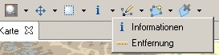

Werkzeuge dienen zum Arbeiten mit Karten. Es gehören dazu (mit Tastenkürzel in Klammern):
Bearbeitungswerkzeuge erlauben das Erstellen, Bearbeiten und Löschen von Geometrien und somit von geographischen Objekten. Einige dieser Werkzeuge sind:
Das jeweils ausgewählte Werkzeug ist in der Symbolleiste grau hinterlegt.
In der jeweiligen Kategorie können verschiedene Werkzeuge verfügbar sein. Sie erreichen diese über das kleine Dreieck neben dem Symbol.

Die Tastenkürzel können für das Wechseln zwischen den Kategorien, aber auch für das Wechseln der Werkzeuge innerhalb einer Kategorie verwendet werden.
Weiter im Tutorial: 6.1 Zoomen
 (c) Copyright (c) 2004-2008 Refractions Research Inc. and others.
(c) Copyright (c) 2004-2008 Refractions Research Inc. and others.